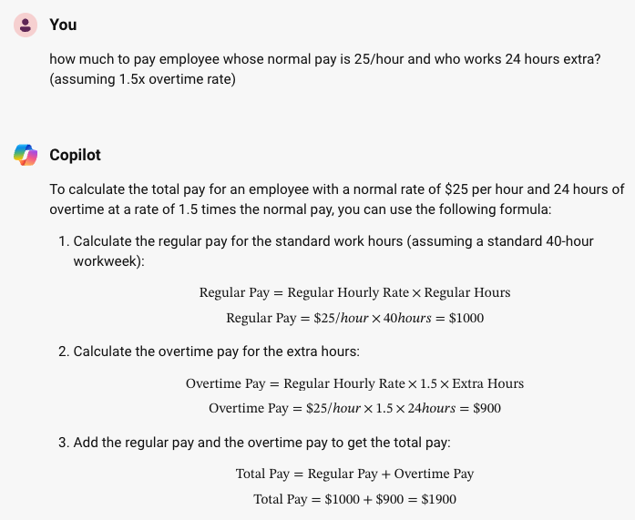
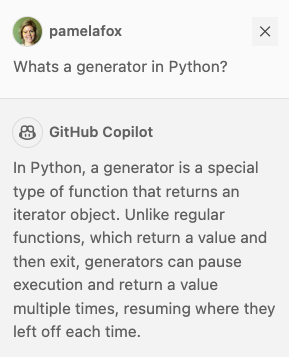
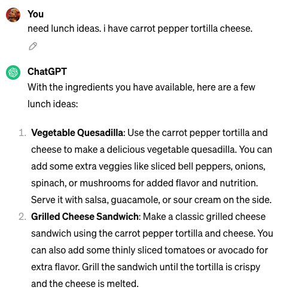
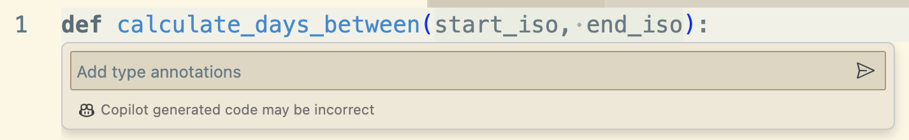
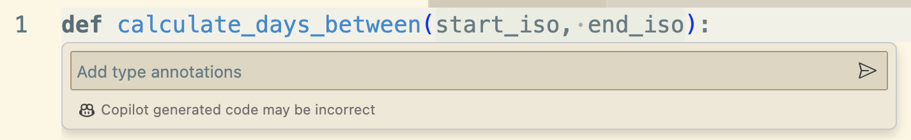
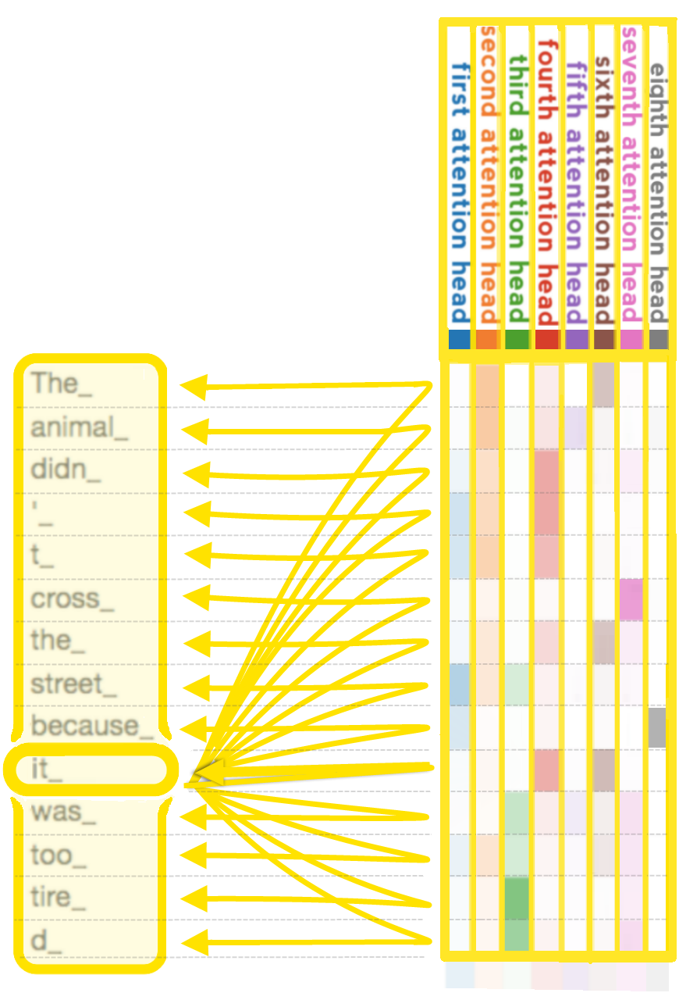
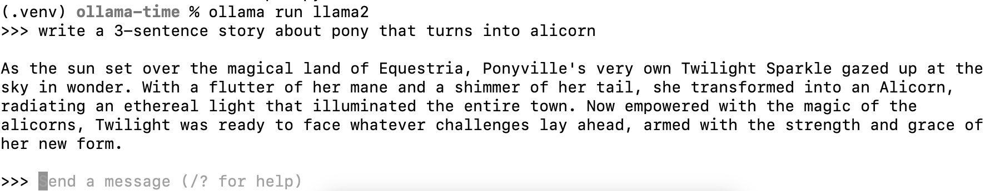
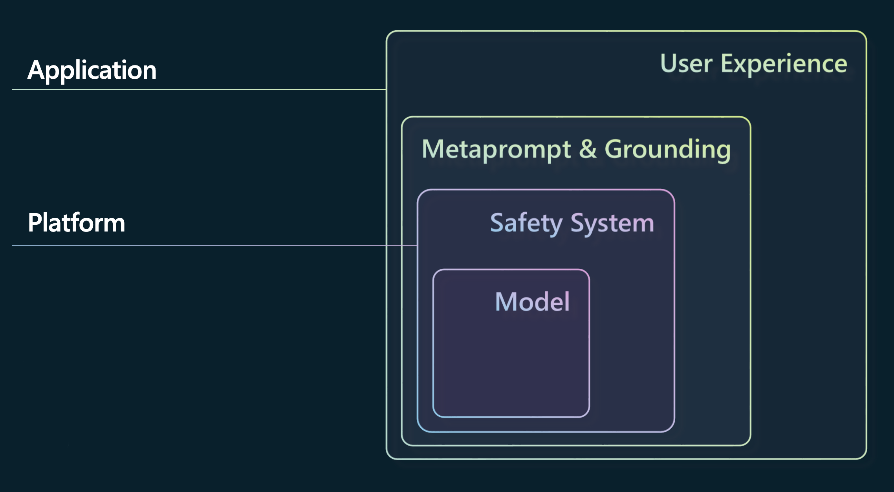
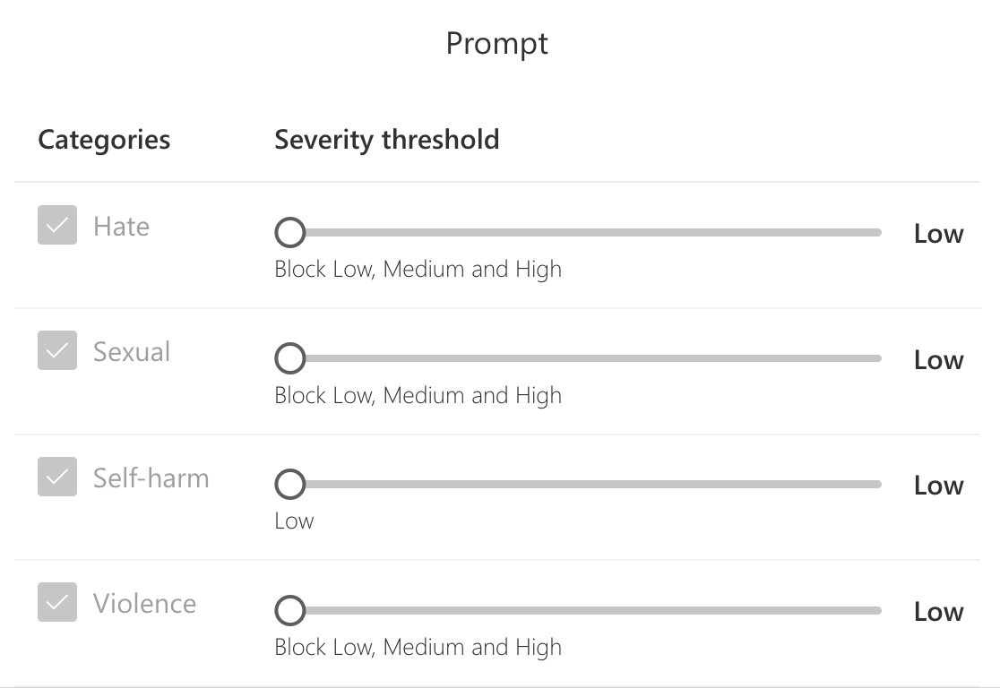

Intro to
Large Language Models
with Python
aka.ms/llms-python-slides
LLMs & GPTs

You've probably used an LLM...
   

ChatGPT, GitHub Copilot, Bing Copilot, and many other tools are powered by LLMs.
Large Language Models (LLMs)
An LLM is a machine learning model that is so large that it achieves general-purpose language understanding and generation.


Generative Pretrained Transformer (GPT)
GPT models are LLMs based on Transformer architecture from:
📖 "Attention is all you need" paper
by Google Brain
Learn more:
- Andrej Karpathy: 🎥 State of GPT
- Andrej Karpathy: 🎥 Let's build GPT: from scratch, in code
Hosted Large Language Models
Hosted LLMs can only be accessed via API, from a company hosting the model and infrastructure for you.
| Company | Model | Parameters |
|---|---|---|
| OpenAI | GPT-3.5 | 175B |
| OpenAI | GPT-4 | Undisclosed |
| OpenAI | GPT-4o | Undisclosed |
| Gemini 1, 1.5 | Undisclosed | |
| Anthropic | Claude 3 family | Undisclosed |
Demo: Azure OpenAI Playground
All Azure OpenAI deployments come with a playground:

OpenAI.com offers a similar playground.
Local LLMs
A local LLM can be downloaded and used by anyone, as long as they have the computational resources to run it.
| Company | LLM | Parameters |
|---|---|---|
| Meta | Llama 3 | 8b, 70B, 405B |
| Gemma | 2b, 7b | |
| Microsoft research | Phi-3 | 3.8B |
| Mistral AI | Mistral | 7b |
| Mistral AI | Mixtral | 8x7b |
| Researchers | Llava | 7b, 13b, 34b |
Demo: Ollama
Ollama is a tool for easily running local LLMs on your computer.
You can also run it from GitHub Codespaces: 🔗 aka.ms/ollama-python: Ollama Python Playground
Using LLMs
in Python

OpenAI API
The OpenAI API is an HTTP API with endpoints for different tasks, like chat completions and embeddings.
The official OpenAI Python SDK is available on PyPI:
pip install openai
The API is compatible with models hosted many places:
- Openai.com account
- Azure OpenAI account
- GitHub models
- Local LLM with OpenAI-compatible API (Ollama/llamafile)
OpenAI demos repo
This repository contains many Python demos and supports multiple OpenAI hosts:
🔗 Python OpenAI DemosUse these links to open it with your OpenAI host of choice:
API authentication for OpenAI hosts
For openai.com OpenAI, set your API key:
client = openai.OpenAI(api_key="your-api-key")
For Azure OpenAI, use Azure default credentials:
azure_credential = azure.identity.DefaultAzureCredential()
token_provider = get_bearer_token_provider(azure_credential,
"https://cognitiveservices.azure.com/.default")
client = openai.AzureOpenAI(
api_version="2024-03-01-preview",
azure_endpoint=f"https://your-openai-service.openai.azure.com",
azure_ad_token_provider=token_provider,
)
API Authentication for OpenAI-like hosts
For Ollama, no key is needed:
client = openai.OpenAI(base_url="http://localhost:11434/v1",
api_key="nokeyneeded",
)For GitHub, pass PAT (personal access token) as key:
client = openai.OpenAI(base_url="https://models.inference.ai.azure.com",
api_key=os.getenv("GITHUB_TOKEN"))
Call the Chat Completion API
Using chat completions API:
response = client.chat.completions.create(
model="gpt-3.5-turbo",
messages = [
{"role":"system",
"content":"You are a helpful assistant.."
},
{"role":"user",
"content":"What can I do on my trip to Tokyo?"
}
],
max_tokens=400,
temperature=1,
top_p=0.95)
print(response.choices[0].message.content)
Stream the response
completion = client.chat.completions.create(
stream=True,
messages = [
{"role":"system",
"content":"You are a helpful assistant.."
},
{"role":"user",
"content":"What can I do on my trip to Tokyo?"
}
])
for event in completion:
print(event.choices[0].delta.content)
Use asynchronous calls
Using Python async/await constructs:
response = await client.chat.completions.create(
messages = [
{"role":"system",
"content":"You are a helpful assistant.."
},
{"role":"user",
"content":"What can I do on my trip to Tokyo?"
}
])
Learn more: 📖 Best practices for OpenAI Chat apps: Concurrency
LLMs: Pros and Cons
Pros:
- Creative 😊
- Great with patterns
- Good at syntax (natural and programming)
Cons:
- Creative 😖
- Makes stuff up (unknowingly)
- Limited context window (4K-32K)
Improving LLM output
Ways to improve LLM output
- Prompt engineering: Request a specific tone and format
- Few-shot examples: Demonstrate desired output format
- Chained calls: Get the LLM to reflect, slow down, break it down
- Function calling: Get more structured output
- Retrieval Augmented Generation (RAG): Supply just-in-time facts
- Fine tuning: Teach LLM new facts/syntax by permanently altering weights
Prompt engineering
The first message sent to the language model is called the "system message" or "system prompt", and it sets the overall instructions for the model.
response = client.chat.completions.create(
model=MODEL_NAME,
temperature=0.7,
n=1,
messages=[
{"role": "system",
"content": "Respond as Elmo, like you're talking to a 5 year old."},
{"role": "user",
"content": "Why do volcanoes erupt?"},
],
)Few-shot examples
Another way to guide a language model is to provide "few shots", a sequence of example question/answers that demonstrate how it should respond.
response = client.chat.completions.create(
model=MODEL_NAME,
temperature=0.7,
n=1,
messages=[
{"role": "system", "content": "You are a Socratic tutor that helps students with their homework by giving clues."},
{"role": "user", "content": "What is the capital of France?"},
{"role": "assistant", "content": "Can you remember the name of the city that is known for the Eiffel Tower?"},
{"role": "user", "content": "What is the square root of 144?"},
{"role": "assistant", "content": "What number multiplied by itself equals 144?"},
{"role": "user", "content": "What is the atomic number of oxygen?"},
{"role": "assistant", "content": "How many protons does an oxygen atom have?"},
{"role": "user", "content": "What is the largest planet in our solar system?"},
],
)
Function calling
Use function calling to get more structured output:
tools = [
{
"type": "function",
"function": {
"name": "lookup_weather",
"description": "Lookup the weather for a given city name.",
"parameters": {
"type": "object",
"properties": {
"city_name": {
"type": "string",
"description": "The city name",
}}}}}]
response = client.chat.completions.create(
model=MODEL_NAME,
messages=[
{"role": "system", "content": "You are a weather chatbot."},
{"role": "user", "content": "Hi, whats the weather like in berkeley?"}
],
tools=tools,
)
RAG: Retrieval Augmented Generation
A way to get an LLM to answer questions accurately, by first retrieving relevant info from a knowledge source and then generating a response based on that info.
sources = search_data("What's the fastest electric car?")
response = client.chat.completions.create(
model=MODEL_NAME,
temperature=0.7,
n=1,
messages=[
{"role": "system", "content": "Answer according to the sources provided."},
{"role": "user", "content": USER_MESSAGE + "\nSources: " + sources},
],
)
Full RAG samples:
aka.ms/ragchat: Azure OpenAI + Search
aka.ms/rag-postgres: Azure RAG + Postgres
LLM libraries

LLM libraries
Many Python packages offer a layer of abstraction for working with LLMs:
- Langchain: Orchestration
- Semantic Kernel: Orchestration
- Autogen: Orchestration for agentic flows
- Llamaindex: Orchestration for RAG and Agents
- Litellm: Wrapper over multiple hosts
...and many more!
Langchain
Connecting to Azure OpenAI with Langchain:
from langchain_openai import AzureChatOpenAI
llm = AzureChatOpenAI(
azure_endpoint=os.getenv("AZURE_OPENAI_ENDPOINT"),
azure_deployment=os.getenv("AZURE_OPENAI_DEPLOYMENT"),
openai_api_version=os.getenv("AZURE_OPENAI_VERSION"),
azure_ad_token_provider=token_provider,
)
prompt = ChatPromptTemplate.from_messages(
[("system", "You are a helpful assistant that uses emojis."),
("user", "{input}")]
)
chain = prompt | llm
response = chain.invoke({"input": "write a haiku about a hungry cat"})
Llamaindex
Connecting to Azure OpenAI with Llamaindex:
from llama_index.llms.azure_openai import AzureOpenAI
llm = AzureOpenAI(
model=os.getenv("OPENAI_MODEL"),
deployment_name=os.getenv("AZURE_OPENAI_DEPLOYMENT"),
azure_endpoint=os.getenv("AZURE_OPENAI_ENDPOINT"),
api_version=os.getenv("AZURE_OPENAI_VERSION"),
use_azure_ad=True, azure_ad_token_provider=token_provider,
)
chat_msgs = [
ChatMessage(role=MessageRole.SYSTEM,
content=("You are a helpful assistant uses emojis.")),
ChatMessage(role=MessageRole.USER,
content="Write a haiku about a hungry cat"),
]
response = llm.chat(chat_msgs)
Choosing an LLM library?
Consider:
- Does it support every LLM/host that you need?
- Does it support the features you need (streaming, keyless auth, etc)?
- How easy is it to use and debug?
- Is it actively maintained?
- Are the trade-offs worth the benefit?
Responsible AI

Risks of LLMs
- Ungrounded outputs and errors
- Jailbreaks & prompt injection attacks
- Harmful content & code
- Copyright infringement
- Manipulation and human-like behavior
Mitigation layers
Azure AI Content Safety
A configurable system to detect safety violations:
- Detects violations in prompts and responses
- Detects jailbreak attempts
- Detects protected material use
Handling violations in Python
Catch and handle violations in your code:
try:
response = client.chat.completions.create(
model=MODEL_NAME,
messages=[
{"role": "system", "content": "You are helpful."},
{"role": "user", "content": "How to make a bomb?"}
]
)
print(response.choices[0].message.content)
except openai.APIError as error:
if error.code == "content_filter":
print("Please remember our code of conduct.")
More resources
Upcoming events
Join next week's stream to learn how to use GPT vision models in Python:
aka.ms/GPTPy/814B
Join us in September for RAGHack, a 2-week hackathon to build RAG applications:
aka.ms/raghack

Any questions?